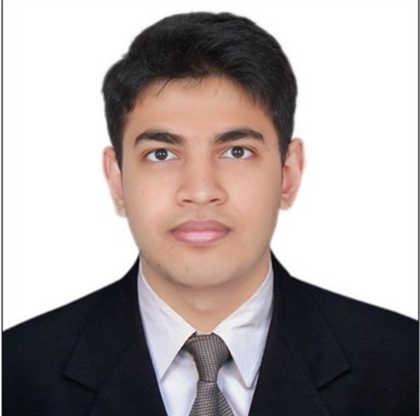

Abrarullah's Resume

Summary :-
Abrarullah Haqqani
B.Tech | Electrical & Electronics Engineering | NIT Warangal CGPA: 9.62
I am a passionate tech enthusiast, aspiring software developer, and problem solver. Currently in my 3rd year at NIT Warangal, I bring a strong foundation in programming, database systems, and software development. My journey has been fueled by projects ranging from IoT-based home automation to real estate price prediction tools, and I actively contribute to innovative solutions through platforms like Smart India Hackathon.
I'm also proud to serve as the Additional Secretary of the BDACC Wing in the Software Development Club at NITW, driving impactful initiatives in analytics and consulting.
With skills in full-stack development, Verilog, and competitive programming, I am committed to building scalable solutions, mentoring peers, and pursuing excellence in the tech industry.
Check out my Github for more details about my projects and contributions.
Education :-
- National Institute of Technology, Warangal
- Degree: B.Tech in Electrical and Electronics Engineering (EEE)
- CGPA: 9.62 (Highest in a batch of 170 students)
- Batch: 2022 – 2026
- CSE Minor Program
- Enrolled in courses like Principles of Database Systems and other CS-related electives.
-
Intermediate Education
- Institution: MS Junior College
- Year of Completion: 2022
- Performance: 99%
-
High School Education
- Institution: Sri Chaitanya School
- Year of Completion: 2020
- Performance: 10.00
Work Experience :-
- Intern - Salesforce (August 2024) (Interview Focused)
- Prepared extensively on DSA topics, DBMS, SQL, HTML, CSS, and JavaScript for this opportunity.
- Solved LeetCode medium-to-hard problems and presented project work like EAPCET Counselling System and Real Estate Price Prediction Tool during interviews.
-
Intern - Bajaj Auto (May-June 2025) (Upcoming)
- Offered a core engineering internship with potential for PPO consideration.
- Engaging in discussions about aligning the internship with career aspirations in the software industry.
-
Additional Secretary - BDACC Wing, Software Development Club, NIT Warangal (Ongoing)
- Organized and strategized events promoting analytics and consulting practices.
- Focused on implementing engaging competitions to drive participation and foster a collaborative tech community.
-
SIH Project Contributor (2024)
- Developed a Learning Dashboard showcasing user statistics like reading time, skill progress, and learning path creation.
- Integrated features like resource management, progress tracking, and a calendar to enhance the learning experience.
Skills :-
-
Programming Languages
- Python, JavaScript, C, C++, Verilog
-
Web Development
- Frontend: HTML, CSS, React.js
- Backend: Node.js, Express.js
- Database: MySQL, MongoDB
-
Data Structures & Algorithms
- Proficient in solving medium-to-hard problems on LeetCode and similar platforms
-
Software Development
- MERN Stack Development
- Dashboard Creation and Full-Stack Project Implementation
-
Tools & Platforms
- Git, GitHub, MySQL Workbench, Tkinter, Matplotlib
-
Data Analytics & Machine Learning
- Property price prediction using ML models
- Visualization and analysis using Python
-
Embedded Systems & Digital Design
- Structural modeling of digital circuits using Verilog
-
Other Skills
- Strong problem-solving and analytical abilities
- Excellent team collaboration and leadership skills
- Quick learner with a focus on adaptability
Linkedin Profile :-
My Profile
Contact Me :-
Click Here
Hobbies :-
Click Here